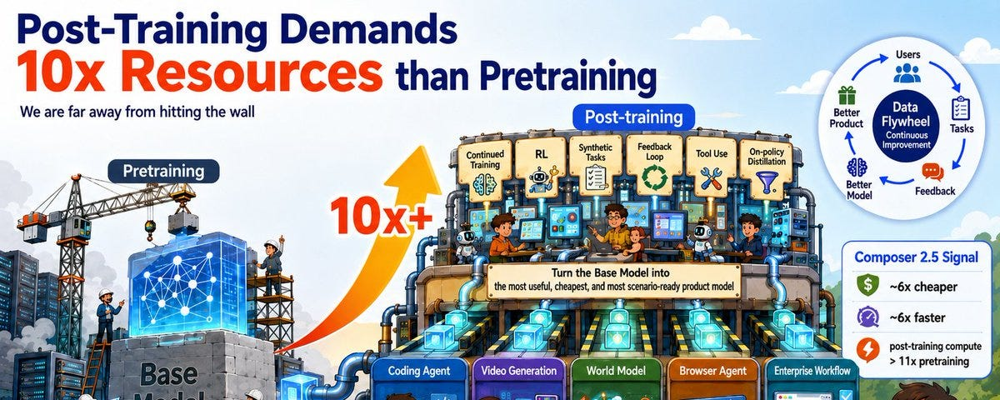

AI
后训练正在消耗 10 倍于预训练的算力
两年前，在前沿实验室里，预训练消耗的算力大约是后训练的 10 倍。半年前，这一比例已接近 1:1。现在，它可能会反转：后训练消耗的算力，可能达到预训练的 10 倍。
Composer 2.5 的那张图释放了一个强烈的信号：
后训练的算力需求将远超预训练，很可能超过 10 倍。与之对应的市场规模会更大。

预训练仍然重要。没有强大的基座模型，很多下游能力根本无从谈起。但预训练越来越像基础设施：资本密集、GPU 密集、周期漫长、玩家寥寥无几，并且很容易演变成少数巨头之间的军备竞赛。
更大的算力需求会首先出现在后训练上。市场随之而来。
用户最终买的不是基座模型。他们买的是一个能写代码、能生成视频、能操控浏览器、能理解公司内部代码库、能可靠执行产品工作流的模型。
这些能力通常并不直接来自预训练，而是来自后训练。
Composer 2.5 是一个强烈的信号
Composer 2.5 并不是一个从零开始训练的全新前沿基座模型。它以月之暗面开源的 Kimi K2.5 checkpoint 为起点，通过继续训练、RL、合成任务、有针对性的文本反馈、on-policy 蒸馏等方法，把这个模型打造成更适合 Cursor 的 coding agent 场景的产品模型。
结果很能说明问题。在 CursorBench 3.1 上，Composer 2.5 已经接近 Claude Opus 4.7，而平均每个任务大约便宜 6 倍、快 6 倍。在公开的图表里，Composer 2.5 处在一个非常有意思的位置：它不是最贵的前沿 API，但能力已经逼近最强的 coding agent 梯队。
算力结构更有意思。Cursor 的 Composer 2.5 博客明确写道：Composer 2.5 是在开源的 Kimi K2.5 checkpoint 之上做后训练的，但其后训练 / 继续训练的算力开销，已经超过 Kimi K2.5 预训练成本的 11 倍。换句话说，一旦存在一个强大的开源基座模型，把它打造成产品级 coding agent 所需的投入，可能比原本那次预训练还要大。
由此可以得出一个很直接的推论：
如果一家公司可以拿一个开源基座模型，结合自己的数据、RL 环境、agent 轨迹、合成任务和产品反馈，投入比原始预训练更多的算力，把它推到接近前沿闭源模型的水平，同时便宜 6 倍、快 6 倍，那么后训练的算力需求就绝不只是挂在预训练后面的一条小尾巴。
为什么后训练的算力需求会超过预训练？
预训练的目标是学习一个关于世界和语言的通用分布。它追求规模、覆盖面和泛化能力，用 next-token prediction 做 SFT 训练。
后训练的目标不一样：可用性。
可用性包含很多东西：
- 模型是否知道什么时候该调用工具；
- 能否在一个长任务中始终保持目标不跑偏；
- 能否跨轮次、跨会话管理记忆；
- 能否可靠地理解和使用长上下文；
- 能否遵循某个产品的交互风格；
- 能否在真实代码库中可靠地修改文件；
- 能否在行业特定的工作流中少犯错误；
- 能否在固定的成本和延迟预算内达到足够好的质量。
面向可用性的后训练需要模型自己的 rollout。同一个 prompt 可能被采样多次，轨迹可能很长，还可能涉及多次工具调用。这些都会推高后训练的计算成本。
视频生成和世界模型让这一点更加清晰
这套逻辑在视频生成和世界模型上可能更加成立。
我们已经有了 30B 规模的开源视频生成模型，更大的开源模型之后也会出现。一旦基座视频模型足够强，下一个差异化因素就不再只是“谁预训练了更大的模型”，而是谁能把这个模型后训练到一个具体的应用场景中。
视频模型的后训练空间非常大：
- 广告视频：品牌风格、镜头语言、产品一致性；
- 短剧和影视：角色一致性、叙事连贯性、分镜规划；
- 游戏和虚拟世界：可控的运动、合理的物理、稳定的交互；
- 机器人和自动驾驶：从视频预测走向可执行的世界模型；
- 创作工具：让模型理解导演式的指令，而不是只会生成好看却不可控的片段。
这一切都需要大量的偏好数据、轨迹数据、失败案例、合成环境、人类反馈、工具反馈和产品闭环反馈。
通用的视频基座模型可以生成“看上去不错”的视频。真正能商用的模型，需要生成满足特定任务目标的视频。这个差距会先表现为后训练的算力需求，然后变成对应的市场。
后训练正在成为应用层的新护城河
人们过去认为应用公司没有护城河，因为基座模型公司迟早会向下游延伸，把一切都吃掉。
如果后训练做得足够深，这个假设就不再显然成立。
Cursor 说明了原因。如果一家应用公司拥有真实用户、高频任务、可验证的反馈，以及自己的 agent 环境，它就可以把这些资产变成训练资产。更多用户带来更多任务和更多失败案例，这让后训练更强；更强的模型改善产品，又带来更多用户。
这就是应用层的数据飞轮。
基座模型公司可以提供一个强大的起点，但它未必掌握每个垂直领域里最细粒度的反馈闭环。
我的结论
预训练决定上限。
后训练决定模型能不能成为产品。
随着越来越多强大的基座模型被开源，预训练的稀缺性会略微下降，而后训练的算力需求会快速上升。在编程、视频生成、世界模型、agent 和企业工作流等领域，后训练消耗的算力、数据和工程投入可能远超预训练。算力需求先扩张，市场随后跟上。
未来 AI 算力需求中最大的一块，可能不是来自“训练一个通用大脑”，而是来自把这个通用大脑变成数百万个有用的专用系统。市场会随着这个需求移动。
喜欢这篇文章？发到自己邮箱，稍后阅读。